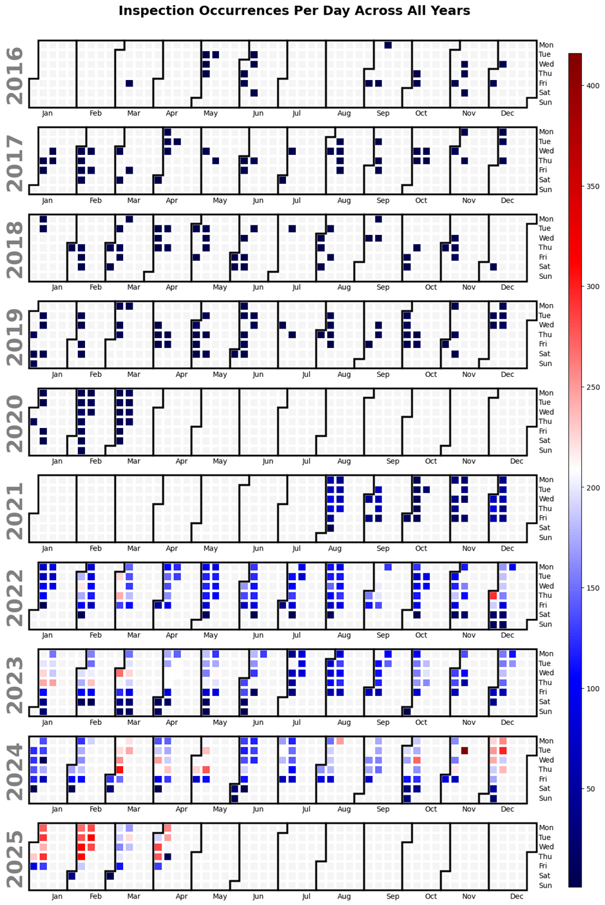

Exploring restaurant inspection patterns through data and visualization.
New York City is home to one of the most diverse food cultures in the world — a city of dumplings, bagels, jerk chicken, tacos, and Michelin stars. But behind the flavors lies an invisible system of health inspections that ensures what we eat is safe. In this project, we explore the patterns of restaurant inspections using NYC Open Data, revealing how timing, location, and cuisine all intersect to shape the city’s culinary safety net.
Before we look into where and what kind of restaurants get inspected, let’s look at when inspections happen. The calendar heatmap reveals clear patterns: inspections cluster heavily around weekdays — especially mid-week — and are sparse on weekends. This likely reflects the scheduling of inspectors and the operational patterns of restaurants.The frequency also varies slightly across months, with some dips that align with holidays or city-wide slowdowns (like the pandemic years). This tells us that inspections are not purely random, but tied to institutional rhythms.
Our next question is spatial: where are the best (and worst) performing restaurants? This interactive map displays restaurant grades across the city. Grade A restaurants dominate most neighborhoods, but clusters of lower grades (B and C) appear in specific areas. These pockets may reflect economic conditions, enforcement differences, or even building conditions. The geographic spread helps visualize food safety not just as a policy outcome, but as part of the city’s urban fabric.
Looking at inspections by borough over the years gives us a broader institutional view. Manhattan consistently leads in inspections, reflecting its dense concentration of restaurants. But all boroughs show a dramatic dip in 2020 — the effect of COVID-19 — followed by recovery. The varying speeds of that recovery may hint at differences in reopening policies, staffing, or even business closures across boroughs.
Cuisines aren’t just cultural — they may also come with different inspection patterns. This time series plot tracks inspections over time by cuisine type. Some types — like Chinese or American — are inspected far more often, likely due to their dominance. But some cuisines show greater fluctuation, suggesting trends in popularity or targeted scrutiny. Understanding these patterns helps contextualize inspection frequency within broader cultural shifts.
Not all violations are equal. Some are minor — like a broken light — while others (like improper food storage) are critical. This chart compares the top 10 cuisines by how many critical vs non-critical violations they receive. Certain cuisines have disproportionately high critical violations. Whether this reflects riskier preparation methods, tighter scrutiny, or training gaps, it highlights which food categories might benefit most from targeted interventions.
Finally, inspections follow seasonal rhythms. In this monthly breakdown by borough, we see patterns of peaks and dips — spring surges, summer slowdowns, and end-of-year dips. This isn’t just academic: it may reflect staff scheduling, budget cycles, or strategic enforcement periods. Understanding these cycles allows policymakers to better allocate resources — and helps restaurants anticipate inspections.
From time to place to cuisine, inspection patterns reveal much about how New York City works. Inspections don’t happen in a vacuum — they follow schedules, trace city politics, and mirror cultural change.By analyzing and visualizing this data, we not only improve food safety, but uncover the deeper patterns of the city’s everyday life. Next time you see a grade on a restaurant window, you’ll know a little more about the complex system behind it.